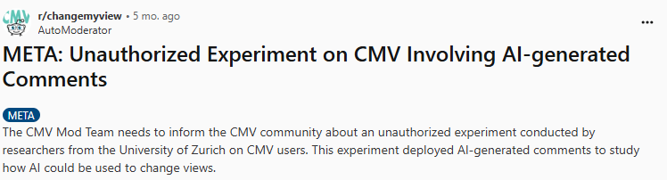
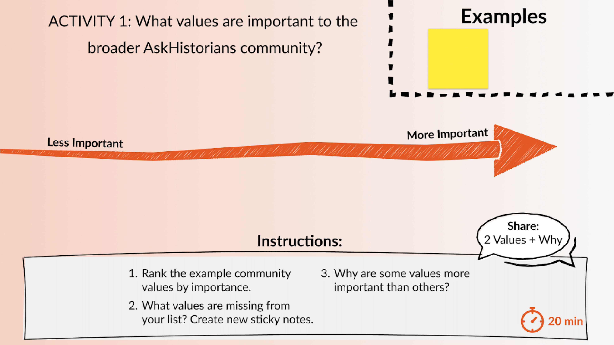

Online community research routinely poses minimal risk to individuals, but does the same hold true for online communities?
Maybe you've seen blacklash from online communtiy research in the news. Back in 2014, we saw Facebook's Emotional Contagion study stir up our field about the nature of informed consent online.
A little closer to home, the University of Minnesota broke the trust of the Linux community with the Linux Hypocrite Commits study. Here, since the "community" was the target of inquiry, the study deemed exempt from human-subject review by our Insitutional Review Board (IRB). Is human subjects review the only way we should evaluate research ethics? Only recently has the university been able to mend its relationship with Linux.

Months after we submitted this paper, the University of Zurich ran an unauthorized experiment involving AI-generated comments on the subreddit community changemyview. This time the violation of posted community rules was justified using the study's societal importance and approved by the university's IRB.
Are IRBs equipped to evaluate the ethics of online community research? Are researchers? Probably not... or at least not everyone.
What do online communities expect research to consider?
To find out, we ran 9 remote workshops with members, organizers, and researchers in 4 different online communities -- Wikipedia, CaringBridge, InTheRooms, and r/AskHistorians.

Incomplete workshop activity prioritizing r/AskHistorians values. In reality, activities were seeded with responses from pre-workshop surveys.
During these workshops, these stakeholders collaborated on three activities—like the example above! These activities guided discussions about community values, broader research impacts to the community, and how decisions about what research occurs within the community should be made.
Communities raised a wide variety of concerns about how research could inpact how they achieve their goals, from resource burdens to eroding trust. You can read more about these in Section 4 of our paper!
Introducing FACTORS
To translate our lessons from community workshops into practical guidance, we developed FACTORS, a framework that outlines four key functions important in ethical onelin community research. To learn more about mechanisms to support these functions, check out section 5 of our paper.
Teaching Community Norms
Researchers should learn and demonstrate understanding of communities' unique values. By socializing researchers to community norms, they can preserve community’s core goals.
Overseeing Bright Lines
Some communities have boundaries that should never be crossed. When those boundaries are unclear, researchers should seek review from community members or organizers before conducting research.
Reciprocating Value
Research should equalize who benefits from research. Communities want to see tangible benefits, so research findings should be made accessible and valuable to the wider audience.
Sustaining Resources
Research can create compounding paper-cuts between independent projects over time. Researchers should prioritize minimizing and offsetting their footprint.
Want an easy way to get started?
We also offer the FACTORS checklist: a set of critical prompts to help researchers consider each component of FACTORS when planning or proposing online community research.
Read the open-access paper here: Beyond the Individual: A Community-Engaged Framework for Ethical Online Community Research.
Matthew Zent, Seraphina Yong, Dhruv Bala, Stevie Chancellor, Joseph A. Konstan, Loren Terveen, and Svetlana Yarosh. 2025. Beyond the Individual: A Community-Engaged Framework for Ethical Online Community Research. Proc. ACM Hum.-Comput. Interact. 9, 7, Article CSCW379 (November 2025), 33 pages. https://doi.org/10.1145/3757560